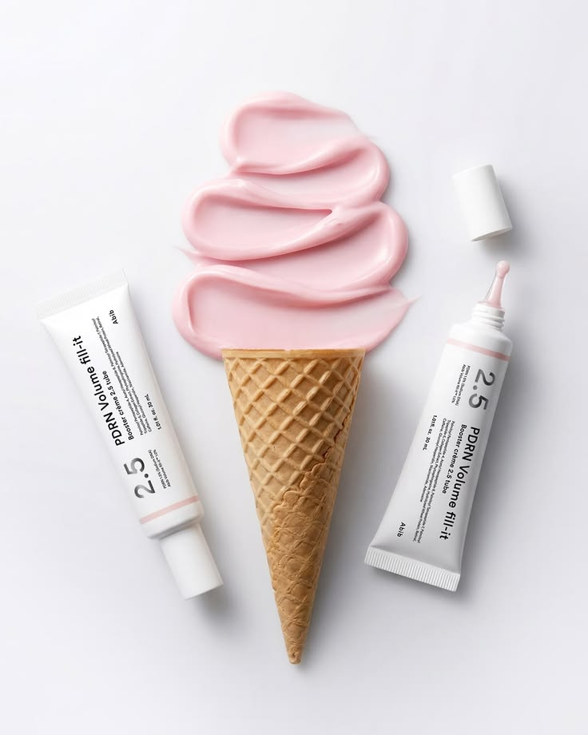
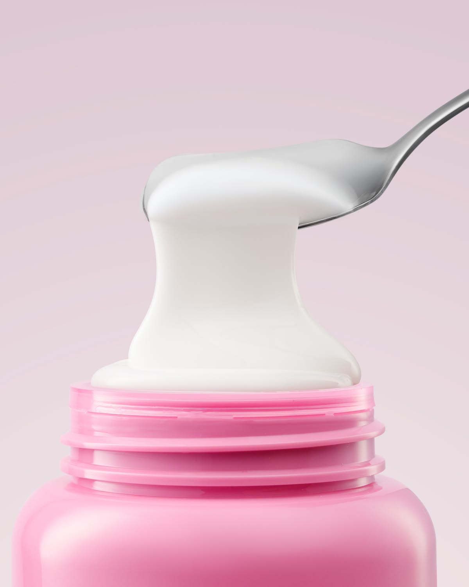

Great Skin Starts With Understanding Your Needs
Skincare is not about following every beauty trend or using countless products. It begins with understanding what your skin needs and creating a routine that works with your lifestyle.
Every person's skin is different. Some people experience dryness, while others deal with excess oil, occasional breakouts or sensitivity. Understanding these differences helps you make better choices when selecting skincare products.
A good skincare routine does not need to be complicated. With a few suitable products, consistent habits and patience, you can build a routine that supports healthy-looking skin.
"Beautiful skincare begins with consistency, patience and understanding your skin."
Understanding Your Skin Type
Before choosing skincare products, it is important to understand your skin type. Different skin types have different needs, and using products that do not suit your skin may make your routine less comfortable.
Your skin type can also change depending on weather, environment, age and other factors. Observe how your skin feels throughout the day instead of relying on a single observation.
Dry Skin
Dry skin often feels tight, rough or flaky, particularly after cleansing. It may benefit from gentle cleansers and moisturisers that help maintain skin hydration.
Oily Skin
Oily skin tends to produce more sebum, which can create a shiny appearance, especially around the forehead, nose and chin. Lightweight, non-comedogenic moisturisers and gentle cleansing can be useful choices.
Combination Skin
Combination skin generally has more than one skin characteristic. For example, the forehead and nose may feel oily while the cheeks feel dry. A balanced routine with products suitable for different areas can help.
Sensitive Skin
Sensitive skin may react to certain ingredients or environmental conditions. It can feel uncomfortable, appear red or become irritated. Gentle, fragrance-free products and introducing new products gradually may help reduce unwanted reactions.
If you are unsure about your skin type, observe how your skin feels after gentle cleansing and before applying other products. Avoid making decisions based on one day alone.
Building Your Daily Skincare Routine
Once you understand your skin type, the next step is building a simple daily routine. Instead of adding many products at once, start with the essentials and understand how your skin responds.

Step 1: Gentle Cleansing
Cleansing helps remove dirt, sweat, excess oil and everyday impurities from the skin. Choose a gentle cleanser that suits your skin type and avoid washing your face excessively.
Use lukewarm water and gently massage the cleanser onto your face. Rinse thoroughly and pat your skin dry with a clean, soft towel.
Step 2: Apply a Suitable Serum
Serums are formulated to address particular skincare concerns. Depending on your needs, you may consider ingredients such as hyaluronic acid for hydration or niacinamide for supporting the appearance of more balanced skin.
Start with one serum rather than combining several active ingredients immediately. Follow the product instructions and observe how your skin responds.
Step 3: Moisturise Your Skin
Moisturiser helps support the skin barrier and reduce moisture loss. Even oily skin benefits from moisturising, although a lightweight formulation may feel more comfortable.
Apply an appropriate amount evenly over your face and neck. Choose a texture that feels comfortable for your skin.
Step 4: Never Skip Sunscreen
Sunscreen is an important part of a morning skincare routine. Choose a broad-spectrum sunscreen with SPF 30 or higher and apply it generously to exposed skin.
Reapply approximately every two hours when outdoors, and after swimming or sweating. Additional sun protection, such as shade and protective clothing, is also helpful.
A consistent morning routine can be simple: cleanse, moisturise and apply sunscreen. Add other products only when they suit your skin's needs.
Choosing the Right Skincare Ingredients
Understanding product ingredients can make skincare shopping easier. Different ingredients serve different purposes, so it is useful to identify your main skincare goals before selecting a product.

Hyaluronic Acid
Hyaluronic acid is a humectant that attracts and holds water. It is commonly used in hydrating skincare products and can help improve the appearance of skin hydration.
Niacinamide
Niacinamide, a form of vitamin B3, is used in skincare formulations to support the skin barrier and improve the appearance of uneven skin tone.
Vitamin C
Vitamin C is an antioxidant commonly included in skincare products designed to improve the appearance of dullness and uneven tone. Different formulations may vary in stability and suitability.
Ceramides
Ceramides are lipids naturally found in the skin barrier. Skincare products containing ceramides can help support the skin barrier and maintain moisture.
Retinol
Retinol is a vitamin A derivative used in skincare products targeting the appearance of fine lines, uneven texture and blemishes. It may cause irritation, especially when introduced too quickly.
Start gradually and follow product directions. Retinoids should be avoided during pregnancy; consult a healthcare professional if pregnant or planning pregnancy.
More ingredients do not always mean better results. Check product labels, introduce active ingredients gradually and patch-test new products.
Daily Habits That Support Healthy-Looking Skin
Skincare does not end with the products you apply. Your everyday habits also contribute to how comfortable and healthy-looking your skin appears.
Stay Consistent
Follow a manageable routine rather than frequently changing products. Give your skincare products time to work and evaluate how your skin responds.
Get Enough Rest
Good-quality sleep supports overall wellbeing. A regular sleep schedule can be a helpful part of your everyday self-care routine.
Maintain a Balanced Lifestyle
A balanced diet, adequate hydration and regular physical activity support general health. No single food or drink guarantees clear or glowing skin, but healthy habits contribute to overall wellbeing.
Keep Your Skincare Tools Clean
Wash reusable makeup brushes and skincare tools regularly. Keep your towels clean and avoid sharing personal skincare items. These simple habits help maintain good everyday hygiene.
Listen to Your Skin
If a product causes persistent burning, itching or irritation, stop using it. Seek professional advice if symptoms continue or become severe.
Common Skincare Mistakes to Avoid
Sometimes, skincare routines become complicated because of habits that are not necessary. Avoiding a few common mistakes can make your routine easier to manage.
- Over-cleansing: Washing your face too frequently may leave your skin feeling dry or uncomfortable.
- Skipping moisturiser: Oily skin also needs appropriate hydration.
- Ignoring sunscreen: Sun protection should be a regular part of your morning routine.
- Trying too many products: Introducing multiple new products at once makes it difficult to identify irritation.
- Excessive exfoliation: Over-exfoliating can irritate the skin and affect its protective barrier.
- Expecting instant results: Most skincare changes take time. Consistency is more useful than constantly switching products.
Make Skincare a Beautiful Everyday Ritual
Building a skincare routine that works for you begins with understanding your skin, selecting suitable products and maintaining simple, consistent habits.
You do not need an elaborate collection of products to care for your skin. Start with the essentials, pay attention to your skin's needs and make adjustments when necessary.
Remember that every skincare journey is different. Be patient with your progress, enjoy the process and give yourself the care you deserve.